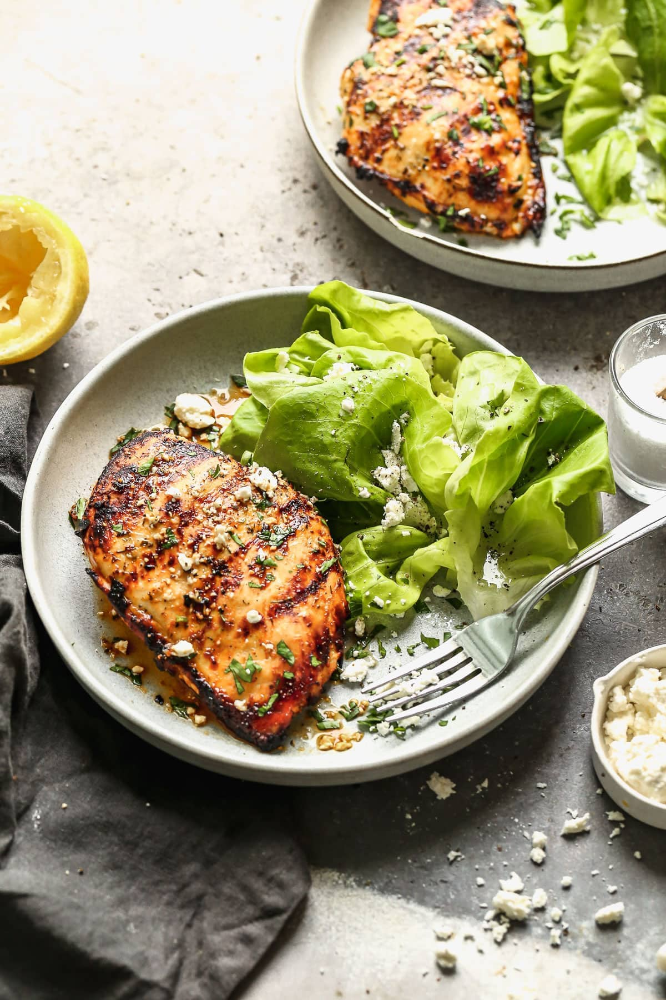

Grilled Chicken with Herbs
This grilled chicken is marinated in olive oil, garlic, lemon juice, and a blend of herbs, then grilled to perfection. A healthy and flavorful main dish!
Ingredients
| Ingredient | Quantity |
|---|---|
| Chicken Breast | 1 piece |
| Olive Oil | 1 tbsp |
| Garlic | 1 clove |
| Lemon Juice | 1 tbsp |
| Mixed Herbs | 1 tsp |
Watch How to Make Grilled Chicken
Instructions
1. Marinate the chicken with olive oil, garlic, lemon juice, and herbs.
2. Preheat the grill to medium heat.
3. Cook the chicken for 5-7 minutes per side until fully cooked.
4. Let the chicken rest for 5 minutes before serving.